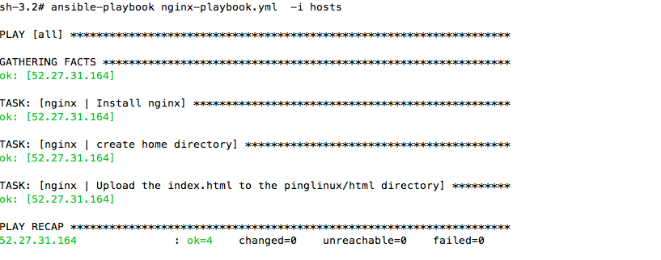

What is Roles?
It is the upper level abstraction in the playbooks to better organize the playbook.Playbook gets bulky and mess when there are few play on it.Thus, roles is used to address this problem. we have to specify the path for roles before using it.
$ cat /etc/anisble/ansible.cfg add /etc/anisble/roles
Ways to organize the playbook into Roles
vi nginx-playbook.yml
---
# yml file to install nginx
- hosts: all
vars:
- home_dir: /var/www/pinglinux/html/
tasks:
- name: Install nginx
yum: pkg=nginx state=installed
notify:
- start nginx
- name: create home directory
file: dest={{ home_dir }} mode=777 state=directory owner=root group=root
register: index
notify:
- restart nginx
- name: Upload the index.html to the pinglinux/html directory
copy: src=index.html dest=/var/www/pinglinux/html/ mode=677
notify:
- restart nginx
when: index|success
handlers:
- name: start nginx
service: name=nginx state=started
- name: restart nginx
service: name=nginx state=restarted
Structure of the Roles.
Create the directory name roles, And have the simlilar structure as below.
roles/mysql/{tasks,handlers,meta,vars,templates,files}
roles/nginx/tasks/main.yml
roles/nginx/handlers/main.yml
roles/nginx/meta/main.yml
roles/nginx/vars/main.yml
roles/nginx/templates/name.j2
roles/nginx/files/Name_OF_file
nginx_playbook.yml
Lets explain the directories
Tasks
vi /anisble/roles/nginx/tasks/main.yml
---
- name: Install nginx
yum: pkg=nginx state=installed
notify:
- start nginx
- name: create home directory
file: dest={{ home_dir }} mode=777 state=directory owner=root group=root
register: index
notify:
- restart nginx
- name: Upload the index.html to the pinglinux/html directory
copy: src=index.html dest=/var/www/pinglinux/html/ mode=677
notify:
- restart nginx
when: index|success
Handlers
vi /anisble/roles/nginx/handlers/main.yml
--- - name: start nginx service: name=nginx state=started - name: restart nginx service: name=nginx state=restarted
Vars
vi /anisble/roles/nginx/vars/main.yml
--- - home_dir: /var/www/pinglinux/html/
Meta
If this role had depended on mysql role.And assuming we had already made the mysql role inside the roles directory
vi /anisble/roles/nginx/meta/main.yml
---
dependencies:
- { role: mysql }
Files
vi /anisble/roles/nginx/files/index.html
Hello World !!!
Templates
You can store the files either in files directory or templates directory
vi /anisble/roles/nginx/templates/file.j2
template: src=index.j2 dest=/var/www/pinglinux/html/index.html mode=677
it will grab the index.j2 file from template directory inside the nginx directory
vi nginxPlaybook.yml
---
- hosts: all
roles:
- nginx
if we had multiple roles, we can list all of them as follow
---
- hosts: all
roles:
- nginx
- php
- mysql
Running the playbook
ansible-playbook nginxPlaybook.yml -i hosts